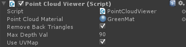

The Prefabs are provided for convenience. They are under $(RSSDK_DIR)/framework/Unity/RSUnityToolkit/Prefabs.
Debug Viewer
The Debug Viewer prefab is provided for debugging purposes. It prints indicators of face, hands and object detection to the Unity log.
Image
The Image prefab renders any stream of choice, by the Stream Out field.
Point Cloud Mesh

The Point Cloud Mesh renders the camera depth data as a 3D mesh.
You can set different materials on the 3D mesh. If Use UVMap is checked, the RGB data will be drawn on the selected material.
The developer can check the Remove Back Triangles option to remove saturated points indicated by the depth value bigger than the value specified in the Max Depth Value field.

Sense AR
The Sense AR prefab is provided for augmented reality purposes. It consists two cameras – Main and Real.
The real camera displays the color stream from the camera, whereas the main camera has a higher Z value and thus displays the Unity objects over the color stream.
Sense Manager
The Sense Manager prefab is the manager of the toolkit. The prefab will be added to the scene if any action is used. The prefab provides living streaming, recording and playback modes, based on the Run Mode setting. For recording and playback, the developer must configure the File Path field.